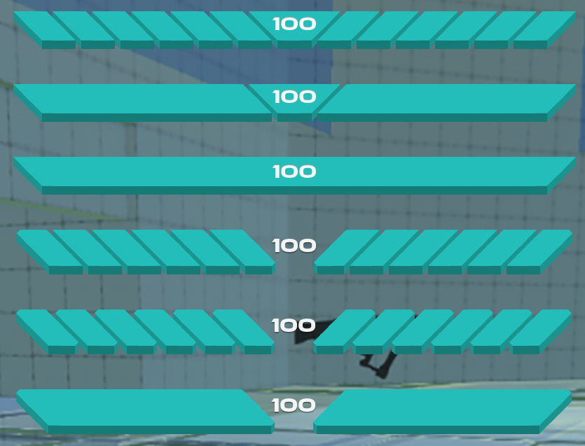

Development Blog
Here you'll find some posts about little things I found interesting about current or past projects, including problems I came up against and how I resolved them, techniques I learned about, etc.
Designing a health bar for Vertigo: Arena
I want to talk a little bit about some of the thinking that went into the design and implementation of the player's health bar for Vertigo: Arena.
Is a health bar even needed?
Most first-person shooter games may have a health bar, but not all of them do. In designing anything, the first question for me is its purpose,
before considering what that answer implies for the design. I considered first the context of the game, what information
the health bar needed to convey to the player, how often, why, etc.
We knew from playtesting that a clear health bar was required, as despite having
placed a small temporary health bar early on, it was often difficult to know how close to death the player was, and whether taking a
break from targeting other players to seek a health pack was worth it. Having this information be glanceable was clearly important.
Whether the player is low on health can be conveyed without a bar, for example, a full-screen vignette, but given we were already using that for
aa hit indication, it was important for us to have a consistent visual element the player could always check to know whether their health is
high or low.
However, our game wasn't designed to be a hyper-competitive e-sports shooter; it was designed to be quick fun with a few friends, meaning that managing exact
stats didn't need to be emphasized.
Early concepting
Following our commitment to having the bar, one of the designers on our team mocked up a 3D concept using ProBuilder in Unity, which inspired the 3D-ish look I ended up
using for the rest of the HUD elements using Adobe Photoshop.
The symmetrical V-shaped design was a good fit for a bar tucked at the top for maximum visibility at the sides of the screen, while nicely adhering
to the shape of our game's logo - also a V. While only meant as a mockup, the 3D appearance made the HUD easily distinct from the game,
which would have many screens and emissive surfaces in the world.
Having been tasked with the final design and technical implementation of the health bar, I set about outlining some key aspects that were important
for me to achieve in adapting this concept:
- Making information as glanceable as possible.
- Visual prominence and accessibility, without taking up too much space.
- A visually consistent look with other HUD/UI elements.
 The above concepts made it clear that aestheticlly, that middle point provided both a good reference point for the eye, and helped the bar feel more thematically appropriate with the 'V'. With this in mind, I implemented a revision on the top concept, with no text.
Implementation
Reviewing the dot points I'd outlined, this design in its current form fits with other HUD elements I'd designed from this, and it's deliberately using a top-aligned 3D appearance to appear more prominent when in a small space out of the way. Concepting was good to nail the general appearance. However, being symmetrical like this presents a glancability problem when compared to traditional left-to-right health bars. While the difference between having all blocks on the sides and having none is clear, it's very difficult to tell the difference anywhere in between. I'm always interested in how motion can be used to convey meaning, so the actual implementation began beckoning me.
After reviewing the damage modelling for the weapons to see how much health a player is likely to lose over a given period when being damaged with various weapons, I settled on 8 blocks either side of the middle. This lets the middle represent 20% health, and every other block represents 10%, which is almost the minimum amount of damage a player will receive, ensuring the bar has enough granularity to display any health differential that matters for gameplay.
It also means that having just the middle block remaining means the player is highly likely to be 1-2 hits away from death.
With this, I implemented an effect that animates a block being knocked off when health is removed. This effect radiates out from the center, which gives subtle feedback when any hit occurs, but gives significant feedback when enough health is lost. Using animation in this way means that without even looking at the health bar, the player will see the animation occur in the corner of their eye, and may be able to tell roughly how many blocks fell.
This implementation means that when the player explicitly checks the health bar, they can see how much is remaining, but implicity, they hopefully always see how much they lose. This is the key for the most important of my three dot points: making the information as glanceable as possible.
Making sure the UI's scale factor could be altered in the settings was important for accessibility, and this solution helped ensure that changes to the health bar was always visible without the eye deviating too much from the center of the screen - with the help of some subtle tricks such as making the blocks fall farther with smaller UI scaling and such.
I'm always looking for what opportunities arise from the decisions we make, and in deciding not to utilize that larger middle piece for text, I had realised it could still be used to further emphasize the most critical thing the player is checking that bar for: am I in danger?
I settled on a red flash on that block, which I feel provides a clean solution to alerting the player when they need it, and not when they don't.
Learnings
One of the most important takeaways from this for me, is to assess problems in the context they occur. Regardless of whether it was a design or programming problem, tackling the problem in a vacuum may have lead to a significantly different result than by getting to the core of the problem being solved, and what behaviours best suit this context specifically.
Being able to rapidly iterate aides this process by creating a feedback loop, but equally important is taking a step back and evaluating the needs of the design and the tools at our disposal in order to create the best solution.